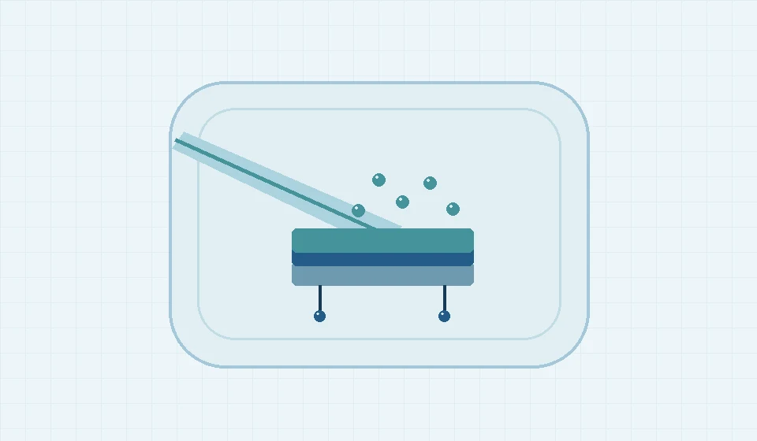
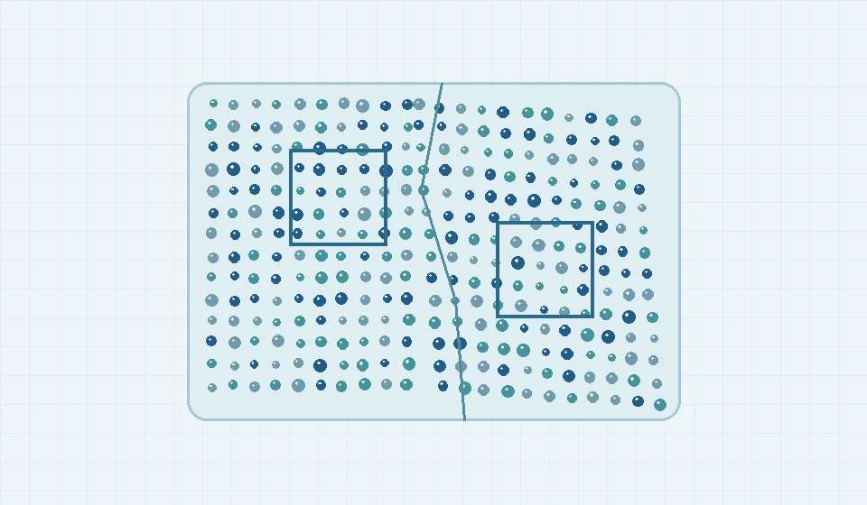

2D Materials
Intercalation Engineering of Ferroic Properties in 2D Materials
Using molecular and atomic intercalation to control magnetic ordering and switchable polarization in layered materials.
View project2D Materials
Using molecular and atomic intercalation to control magnetic ordering and switchable polarization in layered materials.
View project
Electrochemistry
Tracking how PrOₓ surface decoration affects oxygen exchange on LSCF electrodes during thin-film experiments.
View project
Data-driven Microscopy
Mapping subtle structural variations in TEM images using local Fourier fingerprints and unsupervised learning.
View project
Photocatalysis
Investigating Au and Pd single-atom sites on CdS/ZnS quantum dots for coupled CO₂ reduction and organic oxidation.
View project